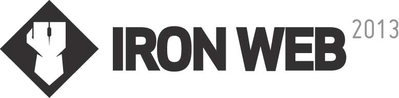

- Diffusé en direct de l'Espace 400e
- Du 20 au 22 février 2013
- 72 heures
Revoyez les projets de l'édition 2012
- Équipe des jaunes : Quebouge.com / Github
- Équipe des rouges : Oussqc.ca / Github
Plus sur 2012 : couverture de presse, compétiteurs et juges.
Le Iron Web recrute!
Le Iron Web est une compétition de type «web réalité». Les participants devront concevoir un site web extraordinaire en 72 heures qui épatera le jury et le public.
Qu'est-ce qui attend les participants à cette édition 2013?
- Des rencontres extraordinaires
- Un projet ... rempli de défis!
- Un lieu de recueil (ou confinement) unique et trippant!
Comment participer?
Inscription
C'est simple, cliquez sur le gros bouton. La période d'inscription est du 5 novembre au 2 décembre 23h59
InscriptionSélection aux entrevues finales
Les candidats retenus seront convoqués en auditions les 16, 17 et 17 décembre 2012.
Sélection finale et formation des équipes
Juste avant Noël, vous serez informé du résultat de votre audition.